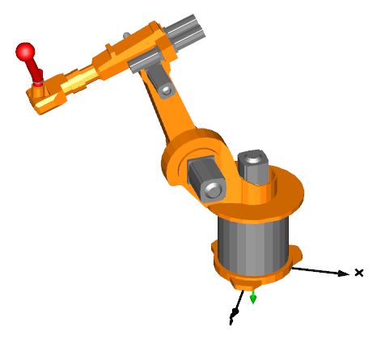

FullRobotSix degree of freedom robot with path planning, controllers, motors, brakes, gears and mechanics |
|
Diagram
{kind=link}
Information
This information is part of the Modelica Standard Library maintained by the Modelica Association.
This example animates a motion of a detailed model of the robot with predefined axes' angles over time. For animation, CAD data is used. Translate and simulate with the default settings (default simulation stop time = 2 s).
The path planning block incorporates a simulation termination condition. Thus, the simulation can be terminated before reaching the stop time. The condition depends on the start and end positions of the joints, and on their reference speeds and reference accelerations. For current settings, the termination condition should indeed be fulfilled right before the simulation stops.

Parameters (37)
| mLoad |
Value: 15 Type: Mass (kg) Description: Mass of load |
|---|---|
| rLoad |
Value: {0.1, 0.25, 0.1} Type: Position[3] (m) Description: Distance from last flange to load mass |
| g |
Value: 9.81 Type: Acceleration (m/s²) Description: Gravity acceleration |
| refStartTime |
Value: 0 Type: Time (s) Description: Start time of reference motion |
| refSwingTime |
Value: 0.5 Type: Time (s) Description: Additional time after reference motion is in rest before simulation is stopped |
| startAngle1 |
Value: -60 Type: Angle_deg (°) Description: Start angle of axis 1 |
| startAngle2 |
Value: 20 Type: Angle_deg (°) Description: Start angle of axis 2 |
| startAngle3 |
Value: 90 Type: Angle_deg (°) Description: Start angle of axis 3 |
| startAngle4 |
Value: 0 Type: Angle_deg (°) Description: Start angle of axis 4 |
| startAngle5 |
Value: -110 Type: Angle_deg (°) Description: Start angle of axis 5 |
| startAngle6 |
Value: 0 Type: Angle_deg (°) Description: Start angle of axis 6 |
| endAngle1 |
Value: 60 Type: Angle_deg (°) Description: End angle of axis 1 |
| endAngle2 |
Value: -70 Type: Angle_deg (°) Description: End angle of axis 2 |
| endAngle3 |
Value: -35 Type: Angle_deg (°) Description: End angle of axis 3 |
| endAngle4 |
Value: 45 Type: Angle_deg (°) Description: End angle of axis 4 |
| endAngle5 |
Value: 110 Type: Angle_deg (°) Description: End angle of axis 5 |
| endAngle6 |
Value: 45 Type: Angle_deg (°) Description: End angle of axis 6 |
| refSpeedMax |
Value: {3, 1.5, 5, 3.1, 3.1, 4.1} Type: AngularVelocity[6] (rad/s) Description: Maximum reference speeds of all joints |
| refAccMax |
Value: {15, 15, 15, 60, 60, 60} Type: AngularAcceleration[6] (rad/s²) Description: Maximum reference accelerations of all joints |
| kp1 |
Value: 5 Type: Real Description: Gain of position controller |
| ks1 |
Value: 0.5 Type: Real Description: Gain of speed controller |
| Ts1 |
Value: 0.05 Type: Time (s) Description: Time constant of integrator of speed controller |
| kp2 |
Value: 5 Type: Real Description: Gain of position controller |
| ks2 |
Value: 0.5 Type: Real Description: Gain of speed controller |
| Ts2 |
Value: 0.05 Type: Time (s) Description: Time constant of integrator of speed controller |
| kp3 |
Value: 5 Type: Real Description: Gain of position controller |
| ks3 |
Value: 0.5 Type: Real Description: Gain of speed controller |
| Ts3 |
Value: 0.05 Type: Time (s) Description: Time constant of integrator of speed controller |
| kp4 |
Value: 5 Type: Real Description: Gain of position controller |
| ks4 |
Value: 0.5 Type: Real Description: Gain of speed controller |
| Ts4 |
Value: 0.05 Type: Time (s) Description: Time constant of integrator of speed controller |
| kp5 |
Value: 5 Type: Real Description: Gain of position controller |
| ks5 |
Value: 0.5 Type: Real Description: Gain of speed controller |
| Ts5 |
Value: 0.05 Type: Time (s) Description: Time constant of integrator of speed controller |
| kp6 |
Value: 5 Type: Real Description: Gain of position controller |
| ks6 |
Value: 0.5 Type: Real Description: Gain of speed controller |
| Ts6 |
Value: 0.05 Type: Time (s) Description: Time constant of integrator of speed controller |
Components (8)
| mechanics |
Type: MechanicalStructure |
|
|---|---|---|
| pathPlanning |
Type: PathPlanning6 |
|
| axis1 |
Type: AxisType1 |
|
| axis2 |
Type: AxisType1 |
|
| axis3 |
Type: AxisType1 |
|
| axis4 |
Type: AxisType2 |
|
| axis5 |
Type: AxisType2 |
|
| axis6 |
Type: AxisType2 |